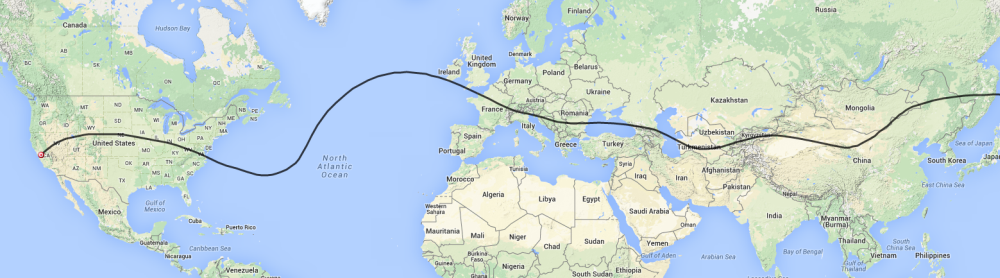

To All interested balloon followers,
There is a new balloon flying this morning. The name is CNSP23 and the radio callsign is K6RPT-12. It is flying currently passing over Modesto, CA at just about 38,000 feet. This is a Super Pressure balloon with some refinements in payload durability. This is yet another research flight to learn what is required to improve this type of craft and the very small payload, GPS, computer and radio.
The link below will take you to the APRS screen to check on the balloon’s progress.
http://aprs.fi/#!call=a%2FK6RPT-12&timerange=604800&tail=604800
As the balloon reaches its cruise altitude the prediction starts looking like this.

Don